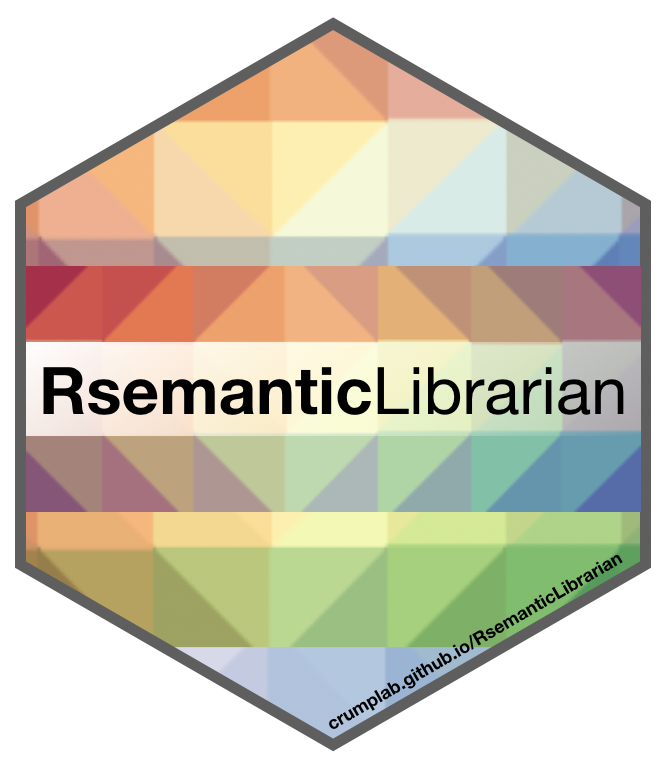
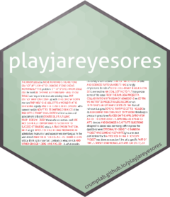
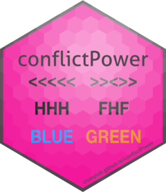

Apps

Shiny Apps, R packages, and various things
R Packages
gptaddin
Addins and shiny app for sending text to LLMs at OpenAI. The addins are focused on writing assistance tools. The shiny app has a grammar checker. This is an experimental package for personal use that may be helpful as a reference for others to build their own similar tools.
vertical
R-studio project template and workflow for sharing psychological research projects in the form of a website.

RsemanticLibrarian
R functions for creating semantic librarians, a tool for vectorizing and visualizing semantic spaces from text

jspsychr
Write and run jspsych experiments using R studio.

playjareyesores
Functions for detecting textual overlap (e.g., possible plagiarism) between documents https://crumplab.github.io/playjareyesores/

conflictPower
Monte-carlo based power analysis for cognitive control designs. https://crumplab.github.io/conflictPower/

crumplabr
A few functions used around the lab. Contains functions for the Van Selst and Jolicoeur outlier procedure. https://github.com/CrumpLab/crumplabr.
Shiny Apps
semanticlibrarian.com
A semantic search engine for the APA abstract database (most of the Experimental journals from 1890s to 2016), formerly known as ATHENA.
We (Harinder Aujla, Randy Jamieson, and Matthew Crump) use semantic vectors from BEAGLE (Jones & Mewhort, 2007) to compute the similarity between abstracts, and authors, and authors and abstracts.
- https://crumplab.shinyapps.io/SemanticLibrarian/
- source code: https://github.com/CrumpLab/SemanticLibrarian
- Open science framework project: https://osf.io/wfcmg/
- Publication: In press at Behavioral Research Methods.
hypothesis_explorer
A Shiny App for viewing annotations from the Hypothes.is database. Need to download and run locally.
https://github.com/CrumpLab/hypothesis_explorer
indTtest
An independent samples t-test simulator.
https://crumplab.shinyapps.io/indTtest/
pairedTtest
An paired samples t-test simulator.
https://crumplab.shinyapps.io/pairedTtest/
simpleexperimentsim
A simple experiment simulator with monte-carlo power analysis
https://crumplab.shinyapps.io/simpleexperimentsim/
R Markdown templates
NSFrmarkdown
An R markdown template for NSF grants
https://github.com/CrumpLab/NSFrmarkdown
LabJournalWebsite
https://github.com/CrumpLab/LabJournalWebsite
Simple template for an R Markdown Website
rmpatternlanguage
A bookdown theme reproducing the style of “A Pattern Language”.
https://github.com/CrumpLab/rmpatternlanguage